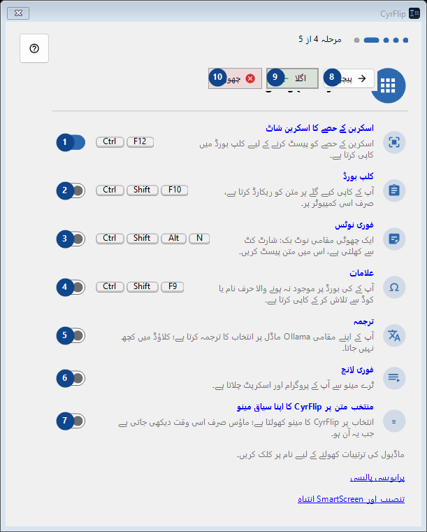
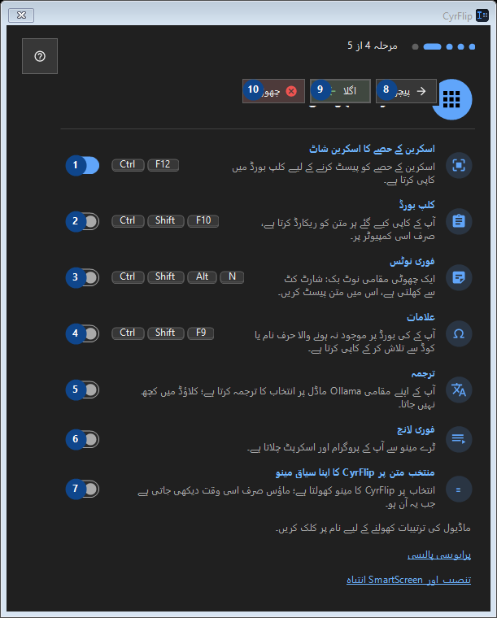

اختیاری سہولتیں
مقصد
نمبر وار وضاحتیں پڑھیں، مطلوبہ اقدار منتخب کریں اور ونڈو کے حکم سے آگے بڑھیں۔


استعمال کی ترتیب
نمبر وار وضاحتیں پڑھیں، مطلوبہ اقدار منتخب کریں اور ونڈو کے حکم سے آگے بڑھیں۔
عناصر
1. اسکرین کے حصے کا اسکرین شاٹ
فعال
آپ کے شارٹ کٹ2. کلپ بورڈ
غیر فعال
آپ کے شارٹ کٹ3. فوری نوٹس
غیر فعال
آپ کے شارٹ کٹ4. علامات
غیر فعال
آپ کے شارٹ کٹ5. ترجمہ
غیر فعال
آپ کے شارٹ کٹ6. فوری لانچ
غیر فعال
آپ کے شارٹ کٹ7. منتخب متن پر CyrFlip کا اپنا سیاق مینو
غیر فعال
آپ کے شارٹ کٹ8. پیچھے
درج شدہ کارروائی کے لیے یہ حکم استعمال کریں۔ قبول کرنے سے پہلے تصدیق پڑھیں۔
آپ کے شارٹ کٹ9. اگلا
درج شدہ کارروائی کے لیے یہ حکم استعمال کریں۔ قبول کرنے سے پہلے تصدیق پڑھیں۔
آپ کے شارٹ کٹ10. چھوڑیں
درج شدہ کارروائی کے لیے یہ حکم استعمال کریں۔ قبول کرنے سے پہلے تصدیق پڑھیں۔
آپ کے شارٹ کٹ